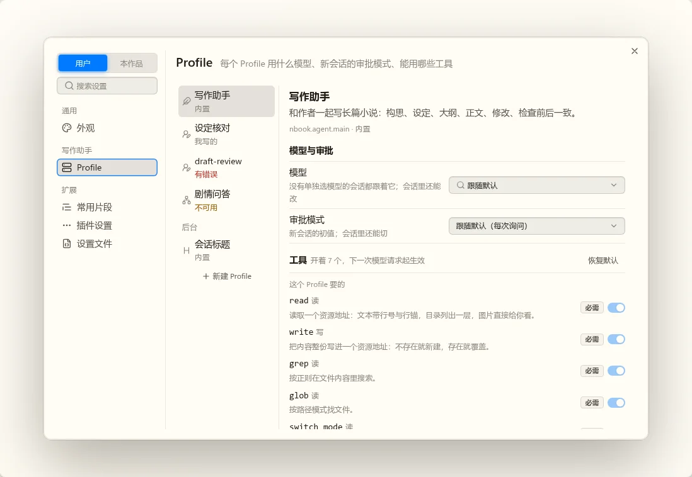
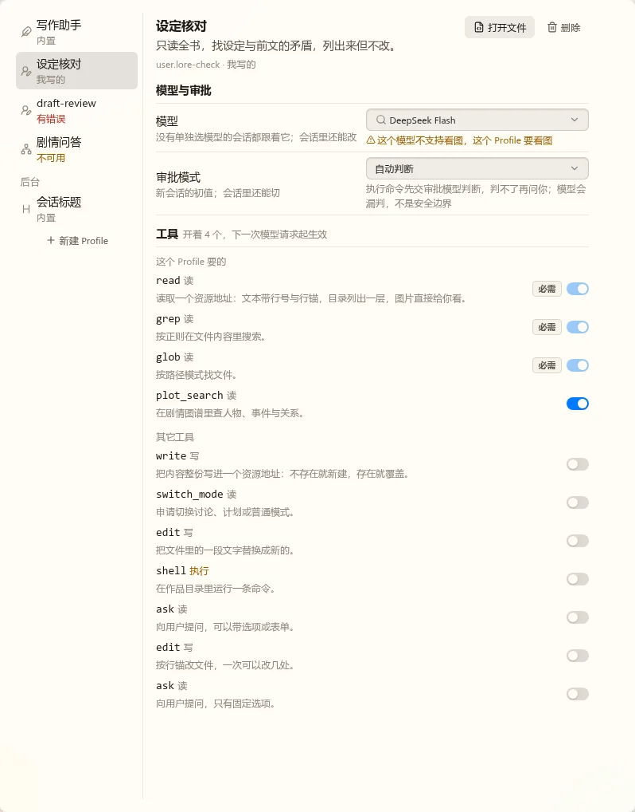
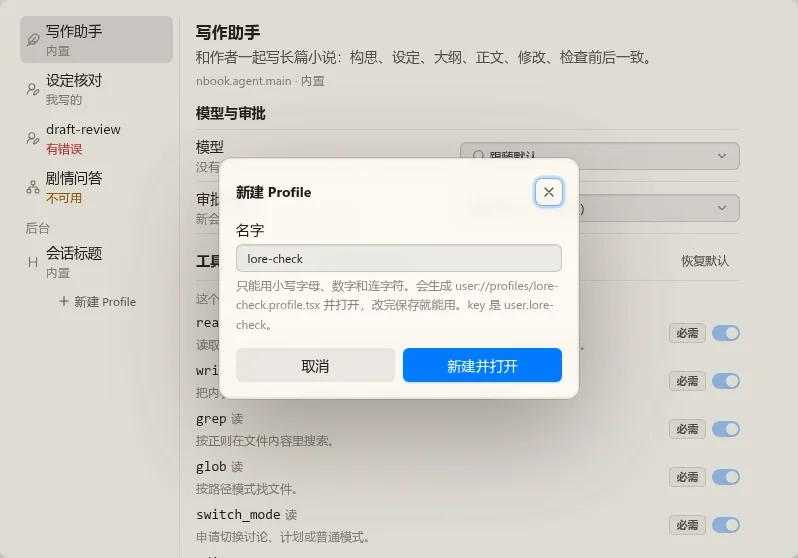
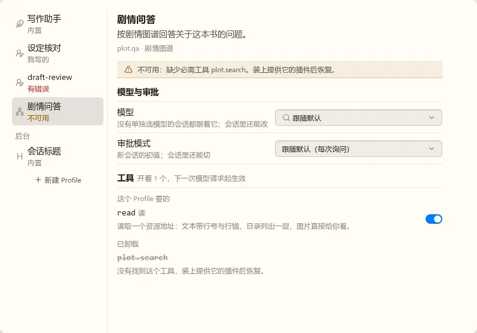
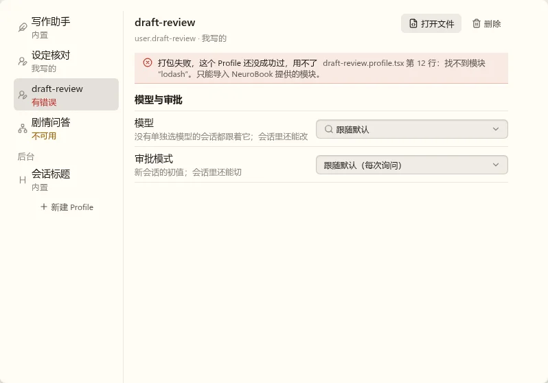
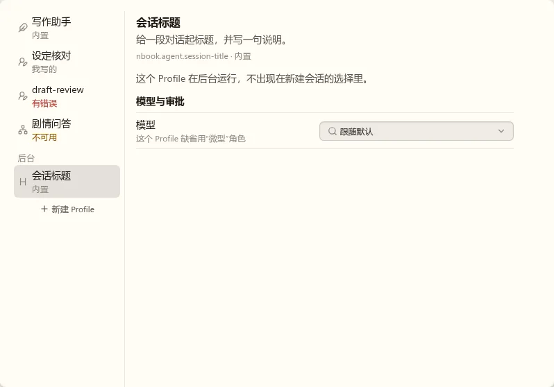
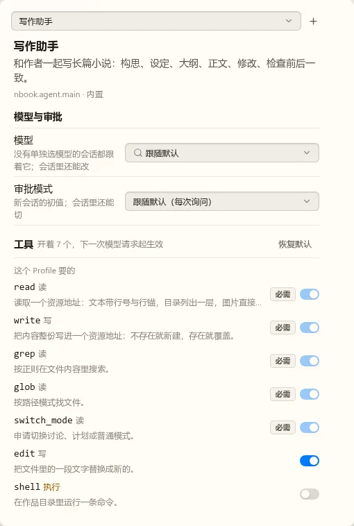
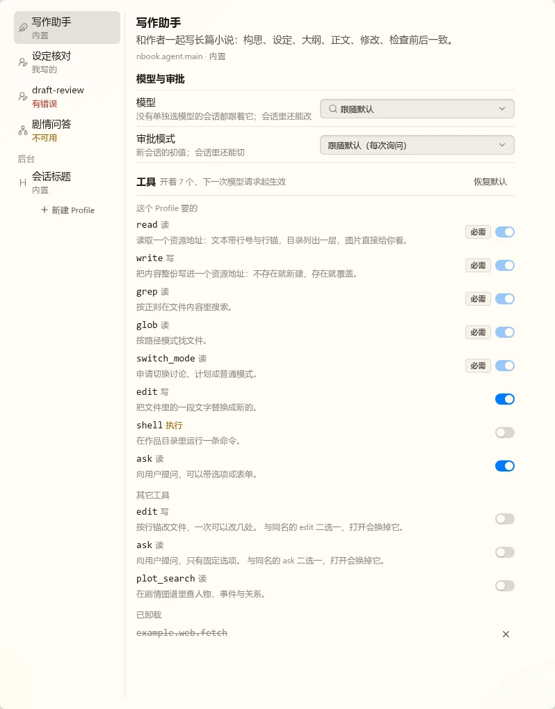
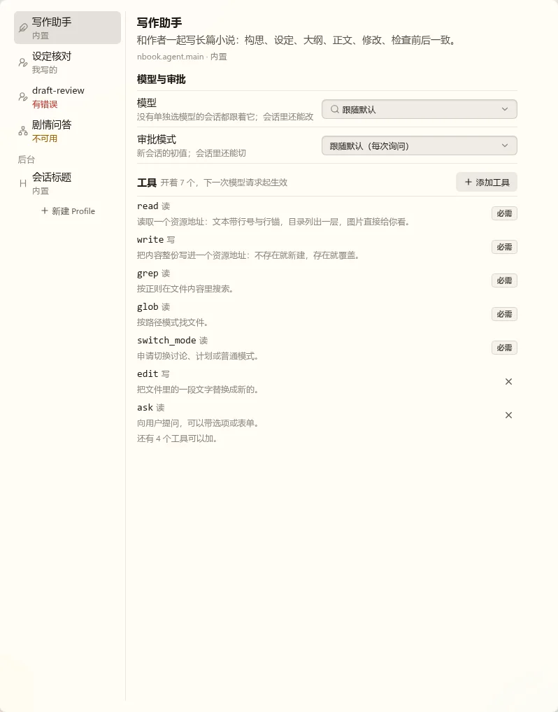

都是静态稿，用真实的 nb-ui 组件和主题，数据是写死的样本。第一张放在真实设置窗口里（左栏其它项是 Lab 的样本），其余只截右边的内容区。
左边列 Profile，右边是选中的那个，和“服务商与模型”一样。右边从上到下：名称和说明、问题（有的话）、模型、审批模式、工具。改了就写，没有保存按钮。







照这样实现。
在备注里写要改什么。
两种都有“下一次模型请求起生效”“必需的去不掉”。现在一共十来个工具；以后装了 MCP 或别的插件可能几十个，这是两种的主要差别。
另外，做稿时发现 edit、ask 各有两个实现，交给模型的名字相同，内核遇到同名会丢掉声明。所以同名的只能开一个：打开一个就自动关掉另一个，并在这一行写明。两种候选都这样处理。

有什么、开了什么一眼看全，改一下只要点一次，开着和关着的都在原位，不会跳动。工具多了变长，到时加一个搜索框。

工具再多也短，但看不到还有什么可加，要点开才知道。去掉和加回来走两个入口，加回来的工具位置也会变。